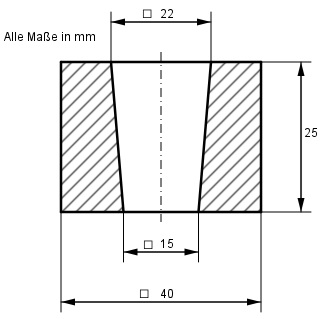
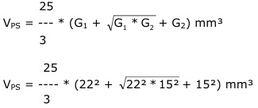

Aufgabe 274 Welche Masse m hat das Verbindungsteil, wenn seine Dichte 7,2 g/cm³ beträgt?  Volumen V = Prisma - Pyramidenstumpf Pyramidenstumpf:  25 VPS = ---- * (484 + 22 * 15 + 225) mm³ 3 VPS = 8 658 mm³ = 8,66 cm³ Prisma: VP = G * h = 40² mm² * 25 mm = 40 000 mm³ = 40 cm³ m = (VP - VPS) * р = (40 cm³ - 8,66 cm³) * 7,2 g/cm³ = 225,6 g